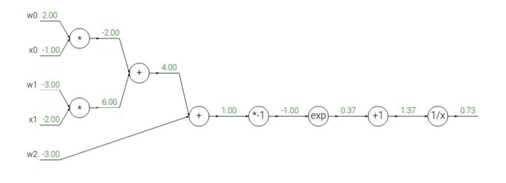
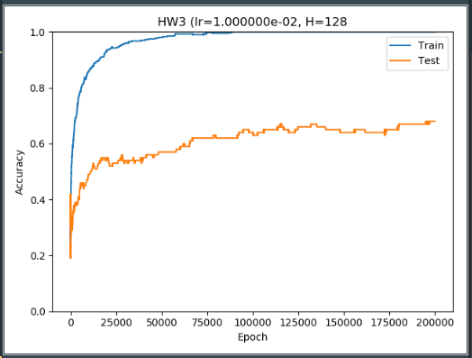

CA-HW-3
HW_3
The assignment of HW_3.
I will adjust the format and combine problem and solution to be more suitable for markdown, but you can get and edit it in Overleaf by the source file.
And you can get my source code solution and commit file in github repo
Problem 1: Gradient Computing (30 Points)
Assuming that one loss function in a classifier has the following output expression:
$$
f(x)=\frac{1}{1+e^{-(w_0x_0+w_1x_1+w_2)}}
$$
and the current state is shown below:

Please compute all the weight gradients $\frac{\partial ~f}{\partial ~w_i}, i=0,1,2$.
Solution 1
函数f(x)由一个线性多项式和一个Logistic函数复合而成，我们不妨将其变成一个复合函数，分别将线性多项式和Logistic函数记作g和s。则复合函数f(x)的表达式如下所示：
$$f(x)=\ s(g) • g(x)$$
这其中子函数s(g)和g(x)的函数表达式如下所示：
$$g(x) = w_0x_0+w_1x_1+w_2,$$
$$s(g) = \frac{1}{1+e^{-g}}$$
然后根据复合函数的链式求导法则，权重梯度$\frac{\partial ~f}{\partial ~w_i}$可以通过如下公式求得：
$$\frac{\partial ~f}{\partial ~w_i} = \frac{\mathrm{d} ~s}{\mathrm{d} ~g} * \frac{\partial ~g}{\partial ~w_i}$$
根据上述复合函数求导公式分别计算两个乘法因子，其中第一项$\frac{\mathrm{d} ~s}{\mathrm{d} ~g}$为：
$$\frac{\mathrm{d} ~s(g)}{\mathrm{d} ~g} = s(g)(1-s(g))$$
然后将上述计算公式带入图中当前状态下$g = w_0x_0+w_1x_1+w_2 = 1.00$的值可以求出:
$$\frac{\mathrm{d} ~s(g)}{\mathrm{d} ~g} = s(g)(1-s(g)) = \frac{1}{1+e^{-1}} * (1 - \frac{1}{1+e^{-1}}) = 0.1966$$
下一步计算复合函数求导公式下的另一个乘法因子$\frac{\partial ~g}{\partial ~w_i}$为：
$$
\begin{cases}
\frac{\partial ~g}{\partial ~w_0} = x0, \\
\frac{\partial ~g}{\partial ~w_1} = x1, \\
\frac{\partial ~g}{\partial ~w_2} = 1
\end{cases}
$$
近一步带入当前状态下的x0，x1的值，分别是-1.00和-2.00:
$$
\begin{cases}
\frac{\partial ~g}{\partial ~w_0} = x0 =-1.00 , \\
\frac{\partial ~g}{\partial ~w_1} = x1 =-2.00, \\
\frac{\partial ~g}{\partial ~w_2} = 1 = 1.00
\end{cases}
$$
那么此时我们将公式（0.6）和公式（0.8）中所示分别计算两个乘法因子的结果再次相乘，即可获得如下计算结果为最终结果：
$$
\begin{cases}
\frac{\partial ~f}{\partial ~w_0} =\frac{\mathrm{d} ~s}{\mathrm{d} ~g} * \frac{\partial ~g}{\partial ~w_0} =-0.1966, &\\
\frac{\partial ~f}{\partial ~w_1} =\frac{\mathrm{d} ~s}{\mathrm{d} ~g} * \frac{\partial ~g}{\partial ~w_1} =-0.3932, &\\
\frac{\partial ~f}{\partial ~w_2} =\frac{\mathrm{d} ~s}{\mathrm{d} ~g} * \frac{\partial ~g}{\partial ~w_2} =0.1966
\end{cases}
$$
Problem 2: Training a two-layer neural network using Numpy (70 Points)
Assuming you have a tiny dataset which has 8 inputs, 4 classes and 500 samples. Please design a two-layer neural network as the classifier. Both forward (inference) and backward (training) propagation are required. The first 400 samples are for training, and the last 100 samples are for test. The dataset is available via:https://cihlab.github.io/course/dataset.txt.The activation function is ReLU in the case.
The following table is an example interpretation of the dataset file.(The first two lines of the file is illustrated.)
| $x_1$ | $x_2$ | $x_3$ | $x_4$ | $x_5$ | $x_6$ | $x_7$ | $x_8$ | $Class Label$ |
|---|---|---|---|---|---|---|---|---|
| 0.4812 | 0.7790 | 0.8904 | 0.7361 | 0.9552 | 0.2119 | 0.7992 | 0.2409 | 4 |
| 0.4472 | 0.5985 | 0.7859 | 0.5035 | 0.6912 | 0.4038 | 0.0787 | 0.2301 | 1 |
Please submit you code and a brief report with the loss function definition, the final accuracy results, the neuron number in the hidden layers, etc. Also include your strategy for batch size and learning rate. (Hint: It is encouraged to use python and numpy (https://www.numpy.org/). You can refer to the slides 34 in the lecture 7 notes. The problem does not encourage you to use Tensorflow/caffe/pytorch, but if you have no idea about numpy, you can also using these frameworks.)
Solution 2
代码参见附件中main.py文件所示，为我针对该problem中所提供的dataset.txt数据集进行训练和测试的神经网络代码。运行该代码所需的环境需要至少装有python3.5及以上，而且需要numpy和matplotlib库，前者用于搭建神经网络进行前向传播及反向传播的运算，后者用于绘制训练结果图片。
下文中将具体介绍整个网络结构及所涉及的超参数:
该网络第一层为8 * 128的全连接层,激活函数按照题目要求为ReLU。
该网络第一层为128 * 4的全连接层,激活函数为softmax。
如下所示为softmax函数的表达公式。Softmax函数实际上是有限项离散概率分布的梯度对数归一化。因此，Softmax函数在包括多项逻辑回归，多项线性判别分析，朴素贝叶斯分类器和人工神经网络等的多种基于概率的多分类问题方法中都有着广泛应用。在本题中最后4个神经元输出经过softmax函数后的最大值所对应的神经元标签即为本神经网络对该数据集输入样本的预测标签。 $$softmax(x) = \frac{exp(x_i)}{\sum_{j}exp(x_j)}$$
本代码main.py中$def\ softmax(x):$为进行softmax计算的子函数
$$softmax(x) = \frac{exp(x_i)}{\sum_{j}exp(x_j)}$$鉴于在本数据集中仅有4个分类预测标签，使用Cross-Entropy（交叉熵）作为损失函数。
$$L = \frac{1}{N}\sum_{i}L_{i} =\frac{1}{N} \sum_{i}-{(y\log(p) + (1 - y)\log(1 - p))}$$
$$L= \frac{1}{N}\sum_{i}L_{i} =\frac{1}{N} \sum_{i}-\sum_{c=1}^My_{i,c}\log(p_{i,c})$$softmax是对于二分类情况下交叉熵损失函数表达式，第一个L公式为多分类情况下交叉熵损失函数表达式即符合本题中的要求。该函数是凸函数，求导时能够得到全局最优值。
这其中涉及的参数主要有三个：$M$为分类数量，即本题中为4；$y_{i,c}$指示变量（0或1）,如果该类别和样本i的类别相同就是1，否则是0；$p_{i,c}$对于观测样本$i$属于类别$c$的预测概率。
需要注意的是，我们采用Cross Entropy作为损失函数的原因除了可以很好的衡量模型效果，还有一个就是它与softmax具有较好的结合性，非常适合求导运算，这会给反向传播减轻计算负担。具体计算我们将在后文中详细展示。附件main.py代码中$def\ get\_dataset(file\_path):$为数据集预处理函数，将数据集中所包含的500个采样数据随机且每类均匀分成400：100，分别对应训练集和测试集，防止出现数据集污染现象。由于数据集不够，为防止出现欠拟合并没有单独列出验证集而是取训练集中100个数据作为验证集。
Batch Size为400，即包含了整个训练集。
learning_rate：在附件main.py代码中提供了$def\ lr\_decay(init\_lr, epoch, max\_epoch):$子函数来进行训练过程中的学习率调整。本子函数提供了多种选择：1:学习率在训练过程中按照初始赋值不变；2:学习率在训练过程中随着epoch增长按照一定规律下降，具体变化规律包括线性变化，指数变化，cosine变化等具体见代码。
如图1所示，在初始赋值学习率为0.01，隐藏层神经元数量为128，采用softmax作为分类预测函数结合交叉熵损失函数的训练过程中，在200000epochs次数下，训练集和测试集准确率的变化趋势。附件中main.py文件代码中第91行开始为借助matplolib库来完成该绘图。
最终训练集的准确率达100%，测试集准确率为68%，此时交叉熵损失函数Loss的值为0.7991。也就是发生了一定程度的过拟合，可以通过采用Batch Normalization和L1正则化或者dropout进行一定程度对神经元抛弃来完成进一步训练：

除此之外，下文中将具体介绍代码中一些需要说明的tricks：
1、如公式（0.10）所示，Softmax函数中存在指数项，在代码实现环节中容易发生溢出。因此在代码main.py中$def\ softmax(x):$子函数里，我们考虑在在所有的指数项上都除以一个适宜的常数$C = exp(Max(x))$，在不会对运算结果产生变化的同时，避免发生溢出现象，即：
$$softmax(x) = \frac{exp(x_i-Max(x))}{\sum_{j}^{ }exp(x_j-Max(x))}$$
2、根据公式（0.10），Softmax的导数如公式（0.14）所示:
$$ \frac{\mathrm{d} ~p_i}{\mathrm{d} ~a_i} = \begin{cases}
p_i * (1 - p_j),&i=j\\
-p_j * p_i, &i\neq j
\end{cases} $$
而根据公式(0.12),Cross-Entropy的导数公式如（0.15）所示：
$$\frac{\mathrm{d} ~L}{\mathrm{d} ~c_i} = -\sum_{}y_{k}\frac{1}{p_k}\ *\ \frac{\mathrm{d} ~p_k}{c_i}$$
进一步将公式（0.14）与（0.15）进行结合，可有公式（0.16）:
$$ \frac{\mathrm{d} ~L}{\mathrm{d} ~c_i} = -\sum_{}y_{i}(1-p_i)\ -\ \sum_{k\neq i}y_{k}\frac{1}{p_k}(-p_k\ *\ p_i)\
=\ p_i(y_i + \sum_{k\neq i}y_{k}) - y_i$$
由于一般 y 的标签使用独热码编码，因此可以直接$ p_i − y_i $作为 $L$ 对 $c_i$ 的导数。但在本题中，数据集的表示是 1-indexed 而非 0-indexed。因此，读入数据集后也就是附件main.py代码中$def\ get\_dataset(file\_path):$数据集预处理函数应当先修正标签值。